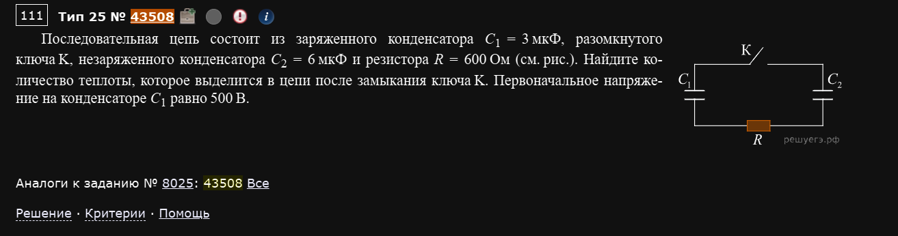
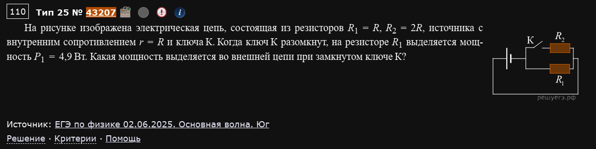
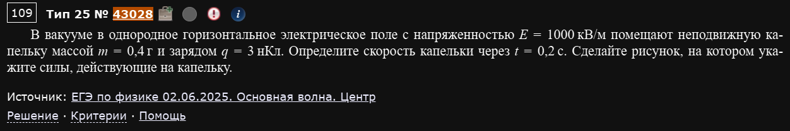
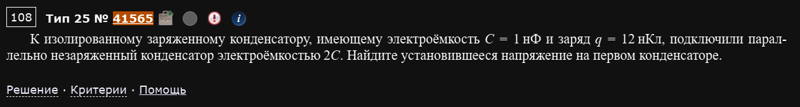
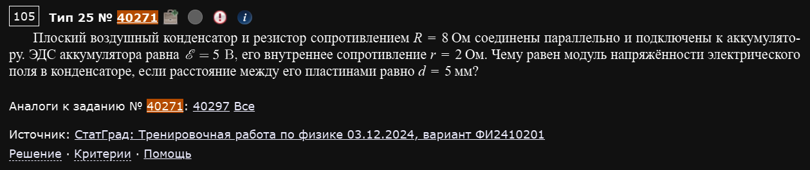
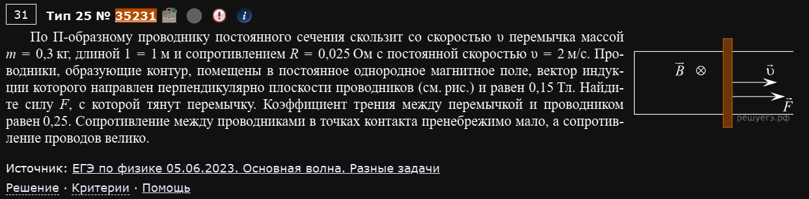
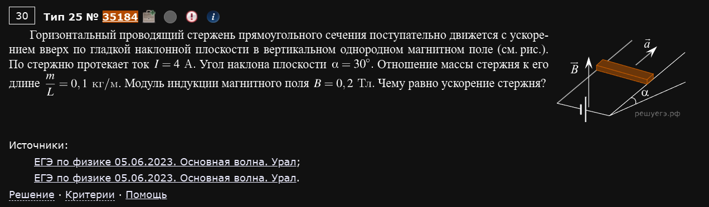
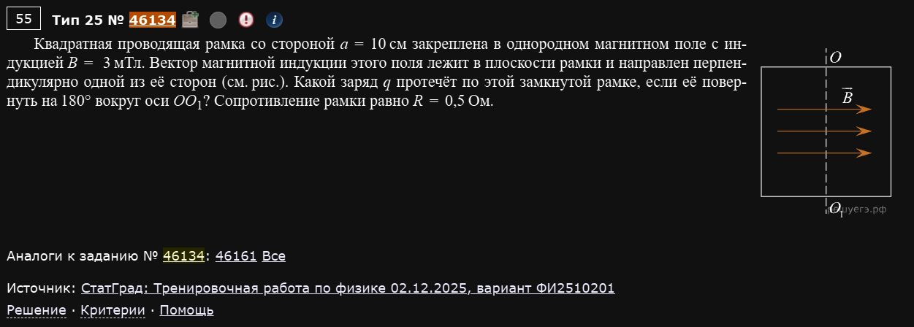

№25. Электродинамика (расчётная задача высокого уровня)
Электродинамический аналог номера 24 — расчётная задача повышенного уровня сложности на 3 балла. Материал здесь: электростатика и цепи постоянного тока, магнетизм и электромагнитная индукция, колебательный контур. Разбираю подробно, как и №21/№24.
Электричество
Пример 1) (Решу ЕГЭ №43508)

Последовательная цепь состоит из заряженного конденсатора C₁ = 3 мкФ, разомкнутого ключа K, незаряженного конденсатора C₂ = 6 мкФ и резистора R = 600 Ом. Найдите количество теплоты, которое выделится в цепи после замыкания ключа K. Первоначальное напряжение на конденсаторе C₁ равно 500 В.
Все четыре элемента образуют один замкнутый контур: и обратно к . До замыкания ключа заряд на равен мкКл, на заряда нет.
После замыкания ключа по контуру потечёт ток, который будет разряжать и одновременно заряжать — так как элементы соединены последовательно (один контур, один ток), заряд, ушедший с одной обкладки , целиком приходит на соответствующую обкладку . Обозначим этот перенесённый заряд . Тогда в конечном (установившемся, при ) состоянии:
Условие установившегося состояния. Когда ток прекращается (), падение напряжения на резисторе равно нулю, а значит, по второму правилу Кирхгофа для контура напряжения на конденсаторах должны быть равны (они противоположно ориентированы в контуре, компенсируя друг друга):
Значит, мкКл, мкКл. Проверка: В, В — совпадают, как и требовалось.
Энергия до и после. Энергия заряженного конденсатора .
Вся “потерянная” энергия конденсаторов выделяется в виде теплоты на резисторе (закон сохранения энергии — больше энергии деться некуда, так как резистор — единственный элемент, рассеивающий её в контуре):
Ответ: Q ≈ 0,25 Дж.
Величина R в этой задаче нужна не для вычислений, а для здравого смысла
Обратите внимание: конкретное значение сопротивления R = 600 Ом ни разу не понадобилось в расчёте! Это не ошибка и не лишняя деталь — сопротивление определяет только то, как быстро (за какое время) процесс завершится, но не то, сколько именно теплоты выделится в итоге. Конечное количество теплоты зависит только от начальной и конечной энергии системы, которые определяются исключительно ёмкостями и начальным напряжением.
Пример 2) (Решу ЕГЭ №43207 — ЕГЭ по физике 02.06.2025, основная волна, Юг)

На рисунке изображена электрическая цепь, состоящая из резисторов R₁ = R, R₂ = 2R, источника с внутренним сопротивлением r = R и ключа К. Когда ключ К разомкнут, на резисторе R₁ выделяется мощность P₁ = 4,9 Вт. Какая мощность выделяется во внешней цепи при замкнутом ключе К?
По схеме резисторы и включены последовательно с источником, а ключ К подключён параллельно резистору — то есть замыкание ключа закорачивает (шунтирует его, весь ток идёт через ключ в обход , поскольку сопротивление идеального ключа равно нулю).
Ключ разомкнут. Ток течёт через последовательно:
Мощность на :
Ключ замкнут. Резистор закорочен (напряжение на нём равно нулю, тока он не несёт — весь ток идёт через ключ), значит, внешняя цепь фактически состоит только из :
Мощность во внешней цепи (вся она выделяется на , так как закорочен и мощности не потребляет):
Используя уже найденное :
Ответ: P = 19,6 Вт.
Замыкание ключа параллельно резистору всегда означает "выбросить этот резистор из схемы"
Идеальный замкнутый ключ имеет нулевое сопротивление — если он подключён параллельно какому-то элементу, при замыкании весь ток предпочитает более “лёгкий” путь (нулевое сопротивление) и полностью обходит этот элемент, независимо от его собственного сопротивления. Такой резистор можно мысленно вычеркнуть из схемы целиком, когда ключ замкнут.
Пример 3) (Решу ЕГЭ №43028 — ЕГЭ по физике 02.06.2025, основная волна, Центр)

В вакууме в однородное горизонтальное электрическое поле с напряжённостью E = 1000 кВ/м помещают неподвижную капельку массой m = 0,4 г и зарядом q = 3 нКл. Определите скорость капельки через t = 0,2 с. Сделайте рисунок, на котором укажите силы, действующие на капельку.
На капельку действуют две силы: сила тяжести (вертикально вниз) и электрическая сила (горизонтально, так как поле горизонтально). Так как это вакуум (сопротивления среды нет), обе силы создают независимые постоянные ускорения по двум взаимно перпендикулярным направлениям — классическая задача на движение с двумя одновременными равноускоренными составляющими, как в баллистике.
Горизонтальное ускорение (от электрической силы):
Вертикальное ускорение (свободное падение): м/с².
Так как капелька начинает движение из состояния покоя, компоненты скорости через время t:
Модуль полной скорости (компоненты взаимно перпендикулярны — теорема Пифагора):
Ответ: v = 2,5 м/с.
Пример 4) (Решу ЕГЭ №41565)

К изолированному заряженному конденсатору, имеющему электроёмкость C = 1 нФ и заряд q = 12 нКл, подключили параллельно незаряженный конденсатор электроёмкостью 2C. Найдите установившееся напряжение на первом конденсаторе.
Система из двух конденсаторов изолирована (никуда, кроме друг друга, не подключена) — значит, полный заряд сохраняется по закону сохранения электрического заряда, а перераспределяется он между конденсаторами до тех пор, пока не установится одинаковое напряжение на обоих (в установившемся состоянии, при параллельном соединении, напряжения на всех ветвях равны).
После соединения оба конденсатора, находясь под одним и тем же напряжением, эквивалентны одному конденсатору с суммарной ёмкостью:
Весь заряд q, изначально находившийся на первом конденсаторе, теперь распределён по общей ёмкости, но напряжение (по определению ёмкости, для параллельно соединённых конденсаторов оно общее) находится через полный заряд и полную ёмкость:
Ответ: U = 4 В.
При параллельном соединении конденсаторов заряд "размазывается" по общей ёмкости
Не нужно отдельно считать, сколько заряда “перетекло” ко второму конденсатору — раз в итоге оба конденсатора оказываются под одинаковым напряжением, достаточно посчитать эквивалентную ёмкость параллельного соединения и сразу поделить на неё исходный полный заряд.
Пример 5) (Решу ЕГЭ №40271 — СтатГрад: тренировочная работа по физике 03.12.2024, вариант ФИ2410201)

Плоский воздушный конденсатор и резистор сопротивлением R = 8 Ом соединены параллельно и подключены к аккумулятору. ЭДС аккумулятора равна ℰ = 5 В, его внутреннее сопротивление r = 2 Ом. Чему равен модуль напряжённости электрического поля в конденсаторе, если расстояние между его пластинами равно d = 5 мм?
В установившемся режиме через ветвь с конденсатором ток не течёт (конденсатор полностью заряжен) — значит, весь ток от аккумулятора идёт только через резистор R, и цепь фактически сводится к простому контуру “источник с внутренним сопротивлением r — резистор R”:
Конденсатор подключён параллельно резистору, поэтому напряжение на конденсаторе равно напряжению на резисторе:
Напряжённость однородного поля между пластинами плоского конденсатора связана с напряжением и расстоянием между пластинами простой формулой:
Ответ: E = 800 В/м.
Магнетизм
Пример 1) (Решу ЕГЭ №35231 — ЕГЭ по физике 05.06.2023, основная волна)

По П-образному проводнику постоянного сечения скользит с постоянной скоростью υ = 2 м/с перемычка массой m = 0,3 кг, длиной l = 1 м и сопротивлением R = 0,025 Ом. Проводники, образующие контур, помещены в постоянное однородное магнитное поле, вектор индукции которого направлен перпендикулярно плоскости проводников и равен 0,15 Тл. Найдите силу F, с которой тянут перемычку. Коэффициент трения между перемычкой и проводником равен 0,25. Сопротивление между проводниками в точках контакта пренебрежимо мало, а сопротивление проводов велико (не учитывайте его).
Перемычка движется равномерно (с постоянной скоростью) — значит, по первому закону Ньютона сумма всех сил, действующих на неё вдоль направления движения, равна нулю. На перемычку вдоль движения действуют три силы: приложенная сила F (тянущая), сила трения (сопротивляется движению) и сила Ампера (тоже сопротивляется движению — по правилу Ленца индукционный ток всегда направлен так, чтобы противодействовать причине, его вызвавшей, то есть тормозить перемычку).
Находим индукционный ток. Перемычка, двигаясь в поле, играет роль источника ЭДС индукции:
Находим силу Ампера, действующую на перемычку с этим током в том же поле:
Находим силу трения (перемычка скользит по горизонтальным направляющим, нормальная реакция равна весу перемычки, так как поле не создаёт вертикальной составляющей силы для горизонтальной перемычки в перпендикулярном поле):
Уравнение равновесия (равномерное движение) вдоль направления движения:
Ответ: F = 2,55 Н.
При равномерном движении в поле сила Ампера — это ещё одна сила сопротивления, а не "особая" сила
Легко забыть про силу Ампера, посчитав только трение — но раз перемычка движется в магнитном поле и в ней течёт ток, сила Ампера действует точно так же, как и любая другая сила, и обязана войти в уравнение равновесия наравне с силой трения. По правилу Ленца она всегда направлена против движения (тормозит), когда именно это движение и порождает индукционный ток.
Пример 2) (Решу ЕГЭ №35184 — ЕГЭ по физике 05.06.2023, основная волна, Урал)

Горизонтальный проводящий стержень прямоугольного сечения поступательно движется с ускорением вверх по гладкой наклонной плоскости в вертикальном однородном магнитном поле. По стержню протекает ток I = 4 А. Угол наклона плоскости α = 30°. Отношение массы стержня к его длине m/L = 0,1 кг/м. Модуль индукции магнитного поля B = 0,2 Тл. Чему равно ускорение стержня?
Стержень горизонтален и лежит на наклонной плоскости, поле B вертикально — значит, сила Ампера (стержень перпендикулярен полю, угол 90°) направлена строго горизонтально (перпендикулярно и стержню, и полю, по правилу левой руки).
Раскладываем горизонтальную силу Ампера на составляющие вдоль наклонной плоскости. Горизontальная сила, действующая на тело, лежащее на плоскости с углом наклона α, имеет составляющую вдоль плоскости, равную (эта составляющая толкает стержень вверх по склону — именно она разгоняет стержень, согласно рисунку), и составляющую, перпендикулярную плоскости, равную (влияет только на силу нормальной реакции, в уравнение движения вдоль плоскости не входит).
Записываем второй закон Ньютона вдоль наклонной плоскости (плоскость гладкая, трения нет; масса стержня , но, как увидим, длина L сократится):
Длина L сократилась — ускорение не зависит от конкретной длины стержня, только от отношения массы к длине (что и дано в условии вместо отдельных массы и длины).
Ответ: a ≈ 1,93 м/с².
Почему дано m/L, а не m и L по отдельности
Такая формулировка условия — верный признак того, что в итоговой формуле масса и длина должны сократиться и остаться только в виде отношения. Это подсказка для проверки себя: если в вашем решении m и L не сокращаются, а входят по отдельности, где-то допущена ошибка.
Электродинамика
Пример 1) (Решу ЕГЭ №46134 — СтатГрад: тренировочная работа по физике 02.12.2025, вариант ФИ2510201)

Квадратная проводящая рамка со стороной a = 10 см закреплена в однородном магнитном поле с индукцией B = 3 мТл. Вектор магнитной индукции этого поля лежит в плоскости рамки и направлен перпендикулярно одной из её сторон. Какой заряд q протечёт по этой замкнутой рамке, если её повернуть на 180° вокруг оси OO₁? Сопротивление рамки равно R = 0,5 Ом.
Эта задача — на понимание того, что заряд, протекающий по контуру при изменении магнитного потока, определяется формулой — то есть только разностью начального и конечного потока, а не тем, что происходило в промежуточные моменты времени (даже если по пути поток менялся сложным образом, в том числе проходил через большие значения).
Начальный поток. Вектор B лежит в плоскости рамки (перпендикулярно одной из её сторон, то есть параллельно смежной стороне) — значит, B не имеет составляющей, перпендикулярной плоскости рамки, и магнитный поток через рамку в начальный момент равен нулю: .
Конечный поток. Ось OO₁, вокруг которой поворачивают рамку, лежит в плоскости рамки (проходит через середины двух её противоположных сторон) и перпендикулярна вектору B. Поворот на 180° вокруг оси, лежащей в исходной плоскости рамки, переводит плоскость рамки саму в себя как множество точек в пространстве (только “переворачивает” рамку, как переворачивают страницу книги вокруг корешка) — рамка в конечном положении снова лежит в той же самой плоскости, что и в начале. А значит, вектор B, который лежал в этой плоскости с самого начала, продолжает лежать в ней и в конце — то есть конечный поток тоже равен нулю: .
Считаем заряд:
Ответ: q = 0.
Ноль — не признак ошибки, а полноценный законный ответ
На первый взгляд странно, что после столь заметного действия (поворот рамки на целых 180° в поле) суммарный протёкший заряд оказывается нулевым. Но в этом и состоит суть задачи: хотя в процессе поворота (например, когда рамка проходит положение, перпендикулярное исходному, при повороте на 90°) магнитный поток через неё меняется очень значительно и ток в рамке действительно течёт, — к моменту завершения поворота на 180° рамка возвращается в положение, где поток снова равен нулю (как и был), поэтому и ток успевает сначала потечь в одну сторону, а затем развернуться и потечь в противоположную, так что суммарный (нетто) перенесённый заряд компенсируется без остатка. Не отбрасывайте такой ответ как “подозрительно простой” — если рассуждение верное, ноль полностью законен.